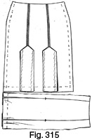

Early 1940's—Ladies' Garment Cutting and Making
by
F. R. Morris
Chapter XX—The Making of Skirts, Trousers, Breeches and Shorts
SKIRT MAKING
THE most important factors in the making of skirts which require detailed instruction are the making of the side plaquet opening, the finish of the tops, and the hem finish. Variation of design by the addition of pleats or flares does not alter the making up of the above details, and after these have been described it is a simple matter to make any type of skirt.
For the purpose of the description of practical making, a skirt with inverted pleats at the back and front emanating from panel seams has been chosen. This is a fashionable tailored style and, in addition, provides for instruction in the basting and making of pleats.
There are many types of pleats, and a few points to remember in the making of pleated skirts are as follows.
Box and Inverted Pleats (Fig. 313)
Never try to save material by cutting down the width of the pleat; otherwise it will be certain that the pleats will gape open in wear. Mark the lines of the pleat edges accurately with chalk, and do not level the pleat by notch marks only but always bring the edges together on the lines of the pleat, baste securely and press well (see Fig. 313 (a)).
Box pleats should be levelled from the tack marks and basted through completely as illustrated by Fig. 313 (b), while inverted pleats, if not cut right through from the waistband or hip yoke, should be cut with the seam of the pleat at the side as in Fig. 313 (c). The seam of the pleat should lie flat against the skirt and not be pressed open except at the hem. The top edges of the pleat should be side-stitched to the skirt in order to hold the pleat firmly. Pleats stitched down are folded and basted before stitching, care being taken to make them retain an even width apart. Fasten off the machining immediately the pleat has been stitched and, to make sure that the stitching of each pleat is level, clearly mark the position at which the line of machining is to terminate, as in Fig. 313 (d).
The Inverted-pleat Skirt (Fig. 314)
Fig. 314 illustrates the sections of the inverted-pleat skirt. The back panel (a) is cut on the fold of the material, while the two side sections (b) and (c) are cut on the double of the material, with the front panel on the fold as the centre back. The usual inlays at the sideseam and bottom edge are allowed, and the pleat addition is made by three-quarters of the pleat on the centre back and front panels and one-fourth on the side back and front panels.
The first operation is to mark up the pleat edges and the inlay marks as illustrated in the diagram, and then commence the making by basting down the front panel seams to the pleat level and machine to the level of the break in the pleat allowance. Press open the seam, then baste the inverted pleat as illustrated by Fig. 315, and seam down the edge of the pleat on the side. Do not press the seam open, but leave it flat. After basting down the pleats, inspect the general "hang" and, if correct, side-stitch the top edges together and catch down to the skirt. The back panel seams and pleats are dealt with in the same manner, and, after these have been sewn down, the next operation is the making of the side plaquet opening.
Making the Plaquet Opening (Fig. 316)
The plaquet opening is usually placed on the left side of the skirt, either at the sideseam or in the front panel seam. There are many methods of making side plaquets; some are quicker than others but without the strength of the more detailed opening, and the method illustrated here gives a neatly-finished plaquet opening with plenty of stay for the press studs.
The edges of the plaquet are faced back with silk lining to tone with the skirt material, and the method of making the opening is as follows.
Take the back skirt panel and at the left sideseam sew a folded piece of lining to the edge of the inlay and across the waist line to finish in width a seam past the inlay mark, as illustrated by Fig. 316 (a). The right side of the skirt is shown and, when the lining facing has been sewn, the waist line of the skirt is notched at the end of the facing and on the side inlay at 8 inches down from the waist. The facing when first sewn to the sideseam is 9 inches in length and 1½ inches in width on the fold.
Turn the facing inside out to the right side of the material and tack down as shown by Fig. 316 (b).
On the front skirt at the left sideseam inlay sew a strip of lining 1 inch in width and 8 inches in length, with the right side of the skirt uppermost as illustrated by Fig. 316 (c). The strip of lining is first sewn with the two right sides of the material together and then pressed back and tacked down on the edge of the inlay as in Fig. 316 (c). When this has been done, fold the inlay over from a seam in front of the inlay tack marks, then turn the lining facing back as in Fig. 316 (d), machine across the top edge of the plaquet inlay facing, and notch down at the edge.
Fig. 316 (e) shows the side plaquet opening of the front sideseam after being turned out when it has been machined. The notch of the waistband must be accentuated as this is where the petersham waistband is sewn on.
Baste down the sideseam from the opening length of 8 inches below the waistband, and machine down a ¼-inch seam inside the inlay marking threads. At 8 inches from the waistband on the back sideseam, notch the inlay back to the seam so that the front and back inlays can be pressed flat as in Fig. 316 (f).
The bottom edge of the plaquet facing on the back inlay is then turned in below the inlay notch and felled down securely. Fell down the sides of the lining facings at the front and back edges, and then securely hand-tack the two plaquet facings together as shown in Fig. 316 (g).
Baste down the right sideseam, machine a seam inside the inlay marks, and then press open. The waist size should then be measured up and, if too much fullness is present owing to faulty cutting or stretching of the top edge, reduction should be made before the petersham is basted on.
Assuming the waist size to be correct, about ¾ inch can be allowed over the actual tight waist girth for easing on to the waistband.
Sewing the Waistband to the Tops (Fig. 317)
Fig. 317 (a) illustrates the waist tops after both side-seams have been sewn down. For one method of sewing the petersham waistband to the tops, firstly turn in the edge as indicated and press. Measure the waist length on the petersham and add about 1 inch at each end for turning in and for increasing the waist size if required. Tack the petersham to the absolute edge of the plaquet facing on the back sideseam and to the inside edge of the plaquet facing on the front sideseam, and then baste the tops on to the petersham by working from the outside of the skirt over the waistband so that the skirt tops are slightly eased on to the petersham. The edge of the skirt should be absolutely level with the edge of the petersham, and then the petersham should be machined to the tops from the inside so that the machining does not go off the edge.
Another method of finishing the tops is to sew the petersham waistband flat on the edge of the skirt tops as in Fig. 317 (b) and then turn back inside and catch down at the panel seams and sideseams.
Three press studs and two hooks and eyes are sewn to the plaquet opening as shown by Fig. 317 (c) to finish the waistband.
The Bottom Edge Finish (Fig. 318)
The bottom edge should be levelled off, and then a strip of narrow Prussian binding is sewn flat to the edge of the turn-up as illustrated by Fig. 318.
The bottom inlay is turned up to the marking threads, and the binding is felled down to the skirt. Well press the bottom edge before taking out the tacking threads and then, to complete the skirt, oversew the sideseam inlays and panel seams to the skirt for neatness if a fraying material, or notch if the texture of the cloth is firm.
This is by far the neatest method of finishing the bottom edge of the skirt and is to be recommended in preference to turning in the edge of the turn-up and felling down, as this leaves a ridge mark on the outside of the skirt after being pressed off.
MAKING TROUSERS
The standard waist top finish for trousers, shorts and breeches is a side plaquet opening similar to a skirt opening.
Trousers can be made very quickly if there are no pockets to complicate matters, and the first example of trousers making will have a waistband and pleats.
Fig. 319
The sections of the trousers are illustrated by Fig. 319, with the inlays tack-marked and ready for sewing. The trousers waistband is cut on the fold edge of the material for the top edge and in length is equal to the waist size plus 1¼ inches at each end to agree with the plaquet inlay widths, as illustrated by the inset diagram shown on the undersides.
Joining the Waistband to the Tops (Fig. 320)
Baste the pleats as in Fig. 320 (a) with the edges, as indicated by tacking threads, meeting and the pleats facing towards the fronts. Press the pleats and then sew the back waist darts out in the tack marks, as shown in Fig. 320 (b).
Join up the centre front seam as indicated in Fig. 320 (a) by the stitch marks and press open. Similarly, machine down the centre back seam over the seat and press open. The seat seam should be sewn a ¼-inch seam inside the tacking threads as ¼-inch seams have been allowed throughout the draft.
Seam the waistband across the fronts from the two inlay edges, face the plaquet openings with linen as in Fig. 320 (c), turn back the inlay, and fold the inside of the waistband down over the top of the plaquet inlay as illustrated by Fig. 320 (d). Cut away the unnecessary material under the waistband to make a thin finish, and then fell across the inside waistband down over the seam, after basting a thin strip of canvas across the tops to act as a stay.
Joining the Back Waistband (Fig. 321)
Fig. 321 (a) shows the back of the trousers with the waistband seamed on in a similar manner to the fronts. At each side of the inside waistband section, seam a strip of material equal in length to the length of the sideseam plaquet inlay below the waistband. Make this strip of material 1½ inches in width, then turn back the waistband with the right sides of the back and trouser tops together and machine round the edges of the plaquet opening as illustrated by Fig. 321 (b). Turn out the plaquet openings and tack the waistband down to the seam inside as in Fig. 321 (c) and fell across.
Sewing the Sideseams (Fig. 322)
When the plaquet side openings have been prepared, baste down the sideseams and machine to ¾ inch above the plaquet inlay lengths so that sufficient material is left to be turned in to make a neat finish to the tops as in Fig. 322. Fell down each side of the plaquet opening and side-stitch neatly together for strength.
The inside leg seams are finally joined together and seamed and pressed open.
The Bottom Finish (Fig. 323)
To make the P.T.U. bottoms, mark the length of the leg seam down from the fork and then mark three lines 1¾ inches apart as indicated by A, B and C in Fig. 323, C being ½ inch from the bottom edge at D.
Turn back the bottom edge D to ½ inch above line A and baste round. Then turn line B up outside the trouser leg and baste the edge of line A. Cross-stitch the inside edge of line D to complete, and finally tack the sideseams together on the outside.
Incidentally, the plaquet opening may be finished either with press-studs and hook-and-eye fasteners as a skirt opening or with three holes and buttons. The latter method is preferable as it gives more strength and comfort in wear.
Plain trouser bottoms are cross-stitched or felled for a finish, and a 2-inch inlay is usually allowed.
BREECHES MAKING
Breeches making is a specialist's job and seldom comes the way of the ordinary tailor or tailoress. Occasionally an order may be taken, however, and a knowledge of breeches making is necessary.
The cut of modern riding breeches simplifies the making to a great extent in comparison with the cut of breeches a few years back. The run of the side-seam to the centre front of the knee obviates a good deal of manipulation as this part of the seam is on the bias of the material.
The tops of the breeches are usually finished with a waistband and two side openings with jeatted cross pockets, while occasionally the split-fall and fly-front top finishes are seen.
As an example of making, the type of breeches has a waistband and side openings with two jeatted pockets. The front sideseam curves towards the centre front of the knee, and buttons close the breeches below the knee tack.
The Breeches Marked Up for Making (Fig. 324)
Fig. 324 illustrates the various parts of the breeches marked up and ready for sewing. The waistband is cut to the half-waist length plus 1¼ inches at each end to agree with the plaquet inlays at the sideseams. Fig. 324 (a) shows the fronts with 1¼ inches allowed 6½; inches down from the waist level for the plaquet facing. The front dart is sewn in the marks, and the knee and hip-line balance notches should be inserted.
Fig. 324 (b) shows the undersides with the same sideseam plaquet inlay as the topsides and ¾ inch down the seat seam and inside leg seam. Notch the hip-line and knee-balance marks and mark the back waist dart to be sewn in the marks.
Fig. 324 (c) indicates the under-gore section with a 1¼-inch inlay allowed at the sideseam for the button catch and ¾ inch down the inside leg seam as above the gore seam.
Fig. 324 (d) illustrates the waistband cut on the fold of the material as the centre dash line with 1¼ inches at each end allowed to agree with the plaquet inlays.
Take the topsides, seam round the fork curve from the waist line to the inside leg and press open. Seam out the front waist darts and then mark the cross pockets 5 to 6 inches in length, depending entirely on the width of the fronts at the waist level.
Making the Pockets (Fig. 325)
Baste a strip of linen 1 inch in width across the pocket opening line to be ¾ inch longer at each end than the length of the finished pocket opening.
The pockets are cut as in Fig. 325 (b) on the fold of the material at the front edge and with a seam at the sideseam edge. They are made ¾ inch wider at each side than the pocket-opening length, and about 5 to 6 inches in length from the dash line which indicates the edge to seam with the pocket opening, while the back of the pocket as shown by the solid line above the dash line is extended in order to be sewn under the waistband.
The pocket facings are cut 1½ inches in width for the front jeattings and 2½ inches for the backing facings as illustrated by Fig. 325 (c).
To make the pocket, sew the front facing on the edge of the pocket as in Fig. 325 (d), machine with the right sides of the pocket and facing together, and then turn back and edge-stitch the facing over the pocket. Turn in the edges of the backing facing, and place on the opposite side of the pocket to lay half and half with the front jeatting sewing edge. Machine the backing facing to the pocket.
As the pockets are required to be made up in a neat form by having the edges turned in, we must "bag" round the pocket before it is inserted into the fronts. So, as the facings must be inside the pocket, we must first machine round the edges with the facings outside. This is shown by Fig. 325 (e) with the right side or inside of the pocket on the outside, and a row of machining round the pocket edge from the front jeatting to the fold edge.
Turn the pocket inside out after the machining is completed so that the right side of the pocket with the sewn-on facings is inside as shown by Fig. 325 (f).
The pocket is now ready for sewing to the fronts, and Fig. 325 (g) shows the inside of the fronts with the top pocket jeatting sewn in and basted back.
Completing the Pockets and Adding the Waistband (Fig. 326)
Fig. 326 (a) illustrates the opposite front with the pocket facing basted and machined to the pocket-opening line. The right side of the pocket facing is sewn to the right side of the fronts, and the pocket opening is then slit through and notched in the corners in the usual manner for jeatted pockets. Pull the pocket and facing through to the inside and press open the pocket seam to lie flat. Baste along the edge of the bottom facing to make a jeatting equal to the width of the top jeatting, and then baste the back of the pocket up to the waist level as in Fig. 326 (b). Machine or hand tack the top pocket jeatting to the back of the pocket and tack the ends of the jeattings as illustrated, after which the pocket is completed.
The waistband is made and sewn to the tops in a similar manner as with trousers, and the details will not be repeated here in a full form. In brief, baste a strip of linen down the plaquet opening at each side as Fig. 326 (b), and sew one edge of the waistband right across the front waist from the edge of the plaquet inlay at the right side to the edge of the plaquet inlay at the left side. Press open the seam, then turn back the plaquet inlay to a ¼ inch seam inside the tack marks, fold over the waistband into half, and baste down to the seam, catching in the tops of the pockets in doing so. The edges of the plaquet openings are turned in and felled down over the pockets as in Fig. 326 (c).
For thinness the double waistband is substituted by a waistband lining of silesia.
Fig. 326 (d) shows the fronts as they appear finished.
The Back Waistband and Making Up the Knees (Fig. 327)
The back waistband is made as for trousers, in the description of which full details will be found. Briefly, seam down the centre back seam and the back waist darts and sew the waistband from one plaquet inlay to the other. Face the plaquet with linen and join two strips of material on each side of the waistband edge at the top, equal in length to the length of the sideseam inlays from the waistband edge when finished. Lay the right sides of these two strips of material with the right sides of the plaquet inlay and seam down the edges. Turn out and tack across the top edge of the waistband to the bottom seam as in Fig. 327 (a). The plaquet facing is not completely basted down until the sideseams are machined through. This completes the making of the tops, and we will now continue with the knee section.
On the fronts, baste a 1¼-inch strip of linen down the knee seam from ¾ inch above the knee-tack notch on the inside of the material as indicated by Fig. 327 (b), and then machine a 1½-inch strip of lining or silesia down the outside of the knee seam for a similar distance, as shown by Fig. 327 (c). Notch in a seam at the knee-tack position and turn back as in Fig. 327 (d). Baste down the inside edge and machine the knee-seam edge to hold the facing in position.
The under-knee section, Fig. 327 (e), has a similar 1¼-inch strip of linen basted down the inside of the material and a 1½-inch strip of lining or silesia machined down to be turned back and felled down as in Figs. 327 (f) and (g). Machine down the edge of the button catch as shown, and then join this section to the undersides by seaming together at the gore seams as shown by Fig. 327 (a).
Sewing the Sideseams Together (Fig. 328)
Fig. 328 (a) shows the gore seam pressed open. The seam may be taped and stitched through for neatness. Well press the seams and stretch the outer seam to prevent any restrictions.
Fig. 328 (b) illustrates the closing together of the sideseams. Here is where experience in breeches making distinguishes the expert breeches maker. The knee and hip-line balance marks should be checked, and then basting of the sideseams is commenced as shown. The left side is basted from the waist to the knee, and the right side from the knee to the waist.
For convenience, Fig. 328 (b) shows the left side basted from the knee upwards contrary to the above directions. The knee-tack notch on the front seam is placed about ½ inch below the gore seam with both sides of the knee opening level at the bottom edge. Balance the two knee notches of the top and undersides and baste the fronts to the undersides, easing a little fullness in the basting.
Balance the hip-line notches and then baste to the plaquet opening, easing in the undersides to the top-sides for about 4 inches either side of the hip-line notch. Machine the sideseams from ¾ inch above the plaquet facings down to the knee-tack seam notch, complete the making of the plaquet opening by tacking the inside facing down over the front facing, and fell across the edge.
Completion of the Breeches (Fig. 329)
On the outside, make a bar-tack to hold the plaquet opening, and make three button-holes in the side-seams at either side as in Fig. 329 (a).
Seam the inside of the legs together by laying the inside leg seam of the topsides to the inlay mark of the undersides, and complete the knee finish by facing back or binding the bottom edges of the legs.
Strappings of the same material or buckskin are about 9 inches in length, shaped to the knee, and hand-stitched on as shown by Fig. 329 (b), commencing at the small of the knee.
The knee button-holes are spaced about ¾ inch to 1 inch for the first five holes, and then twice this distance for the remaining length of he knee opening.
Breeches should be well shrunk at the underside of the knee above the gore seam and pressed flat with sideseam to sideseam. As stated previously, breeches-making is a specialized branch of the tailoring trade, and the expert riders usually patronize houses noted for their cut and make, though, in later years, the well-known stores have featured and supplied riding garments made to measure or ready to wear.
SHORTS MAKING
Plain shorts are a simple matter from the making point of view. They are made in the same manner as trousers with the bottoms turned up and felled down. Pleated shorts are the only variety which need any detailed instructions, and by pleated is meant the style with an inverted pleat at the centre front and back seams to cover the fork.
These are known as "skirt-shorts" and usually have two knife pleats either side of the fronts and backs in addition to the centre pleats.
 Making Pleats in Shorts (Fig. 330)
Making Pleats in Shorts (Fig. 330)

Fig. 330 (a) shows the shorts cut out and with the side knife-pleats of the topsides basted down to agree with the pleat marking threads.
Seam round the fork from the waist to the inside leg seam and press open the seam. Machine down the centre front pleating line to the fork level as shown, and then baste down this seam to the centre seam of the fork as in Fig. 330 (b) to form the inverted pleat.
Fig. 330 (c) shows how the shorts appear when completed. The side pleats slant towards the centre, and the centre pleat is then left free and independent of the fork seam.
The undersides are made up in a similar manner to the topsides, and the waistband is sewn to the tops as described for trousers and breeches. Make the plaquet openings at both sideseams, and finish with three holes and buttons.